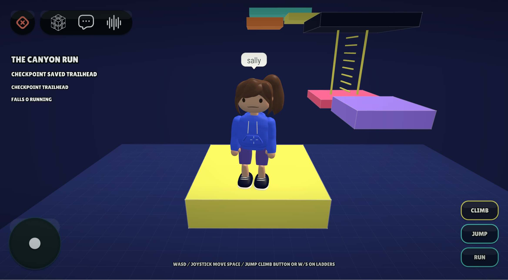
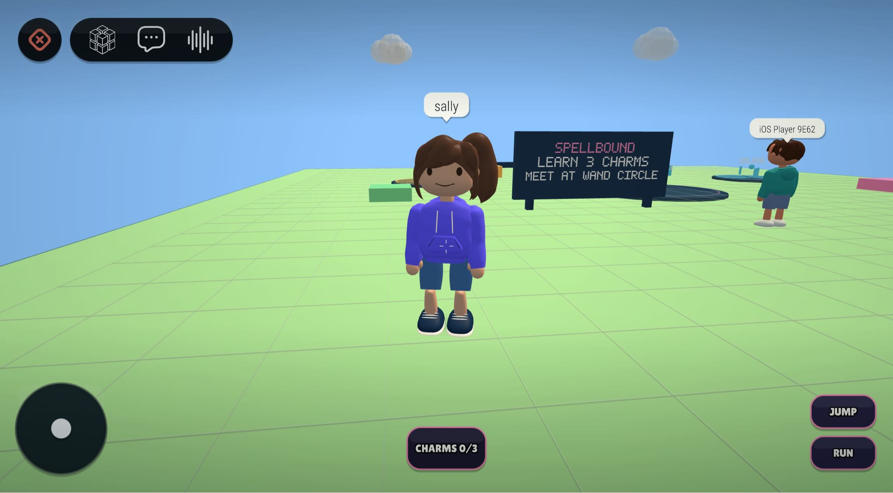
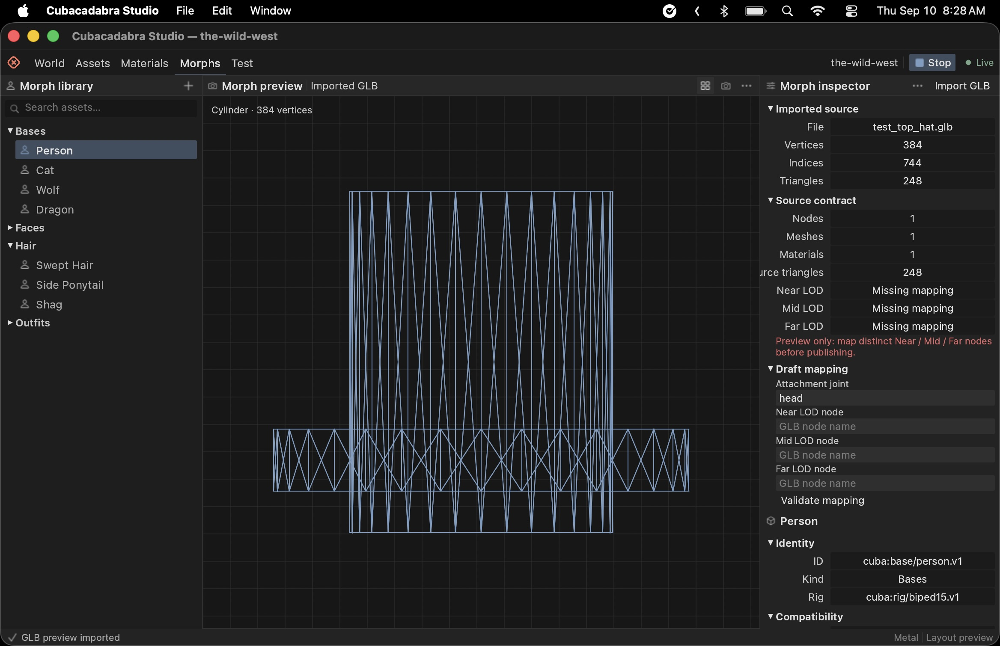
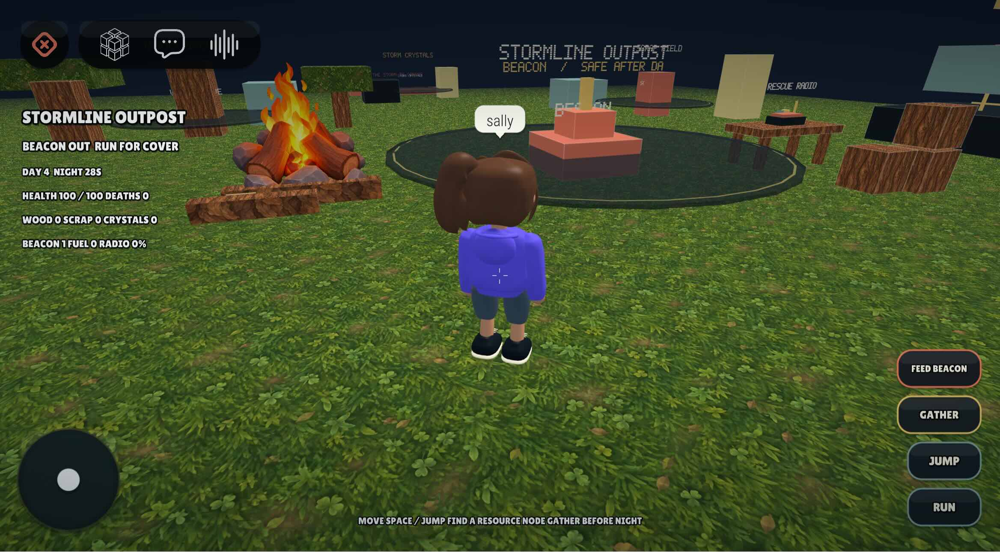

01 / Make some code disappear
Before abracadabra was something you said over a top hat, it was something you wore around your neck. In the ancient Roman Liber Medicinalis, attributed to Quintus Serenus Sammonicus, the prescription was to write the word repeatedly, removing a letter each time, and wear the result as a charm against fever. An unusually literal approach to making a problem smaller.
I've been doing a version of this with Swift, Kotlin, and JavaScript. Find the same decision in three clients. Move it into Rust. Delete the other copies. There's a Rust engine, native iOS and Android apps, a JavaScript browser client running WASM, and a Rust desktop Studio. Game packages carry manifests, Luau scripts, and assets. wgpu handles rendering. That gets you through the architecture slide. Then somebody changes their username while a request is in flight.
There are two extractions worth separating. cubacadabra-client took over the engine-facing multiplayer session for all four hosts. cubacadabra-app owns portable application behavior outside gameplay, now used by the three consumer clients. The engine still owns simulation. Having a shared engine hadn't stopped the surrounding apps from independently deciding what a successful save meant.
02 / The save button has opinions
Suppose you save "Dragon_7," keep typing, then sign out before the response arrives. There are several reasonable-looking ways to get this wrong. Replace the newer draft with the submitted name. Put a green "Saved" beside text that wasn't saved. Apply the old account's response to whoever signed in next. You can reproduce all three bugs without ever drawing a triangle.
The app crate has an AppModel, actions, snapshots, and an effect queue. A host dispatches UsernameChanged and SaveUsername. Rust decides whether the draft is valid, whether anything changed, and whether a save is already pending. It emits an HTTP effect containing an ID, account ID, method, relative path, and body. The host performs the request and returns its raw status and body through HttpCompleted.
That last bit matters. Swift doesn't first decode a user and update its profile, then tell Rust that everything went fine. Rust gets to accept or reject the response before the host projects the new state. A 200 with the wrong account or wrong submitted name is still a failed save. A 401 remains unauthorized even if the server didn't send JSON.
Replacing the session increments a session ID and invalidates pending work. Effect IDs aren't reused within the model. An old response can arrive but it no longer has a pending operation to complete. If you edited during the save, the accepted username can change while your newer draft stays put. Canceling a native task is useful housekeeping, but cancellation alone doesn't establish which account a response belongs to.
The same pattern now covers avatar saves, catalog pagination, and optimistic block/unblock with rollback on failure. Birthday saves share the contract too, although Android doesn't yet expose the editor. Catalog rules include page bounds, duplicate removal, and package-path validation. Those are small decisions until three implementations disagree about them. Reporting still has its own host code; moving blocked users didn't magically migrate every moderation flow.
A 200 with the wrong account or wrong submitted name is still a failed save.
On the phones, account state now belongs to an AppViewModel beside the GameViewModel. A broken game download shouldn't prevent account restoration. Recreating the renderer shouldn't cancel a profile save. The contract fixtures cover late responses and newer drafts, and the Swift and browser probes exercise their real adapters. There's still device work to do. The interesting test is whether the account survives the game's lifecycle.
03 / Who owns that pointer?
The app crate's normal dependencies are Serde and serde_json. It doesn't need wgpu or an async HTTP runtime to decide whether a username is valid. Credentials stay in the host. SwiftUI still owns its text fields, Compose owns its screens, and JavaScript owns the DOM. The shared part decides what those controls mean.
The native app ABI is seven functions: create, destroy, dispatch JSON, get snapshot JSON, poll effect JSON, and read the output pointer and length. Handles are single-threaded. Output belongs to Rust and must be copied before the next mutation. Swift copies it into Data; Android has a small JNI byte-array adapter. Both check the snapshot protocol version. An incompatible binding fails instead of quietly reviving a second set of account rules.
There is serialization and copying here. For account edits and catalog pages, I like being able to read the contract. Studio calls the game client through ordinary Rust methods and enums. The native game client exposes a borrowed engine pointer for existing input and rendering APIs; destroying the client invalidates it. Rust's ownership rules still need an honest description when the next caller is C.
The browser has another easy mistake waiting for you. WebClient and WebRenderer come from the same generated WASM module, so an engine handle refers to the same linear memory on both sides. Two modules compiled from the same source wouldn't make their pointers interchangeable. The app runtime is a separate WASM module, which lets an account page edit a username without loading the renderer. It has no engine pointer to share.
04 / Two people touched the same thing
The client extraction removed a different kind of repetition. Each host had been translating socket messages, maintaining remote players, routing world changes, and draining the Luau network outbox. In the browser's "crate 2nd" commit, 244 lines came out and 74 went in. That's one host's diff, including its adapters. The useful part is having one session implementation to fix.
Hosts pass socket text to ClientSession::receive_text and poll actions before and after stepping the engine. Rust emits SetWorld and SendText. The host still owns authentication, reconnect backoff, and movement-send throttling. A launch can keep the engine's logical world as "arena" while routing the socket to "arena:7." Rust also tracks remote identities and generations, filters ignored accounts, and submits a versioned roster when it changes.
Now put two friends at the same relay checkpoint. Both read sequence 7. Both try to advance the round. The JavaScript backend uses a Cloudflare Durable Object for a world instance, and its retained-state API accepts a compare-and-set with the sequence the client observed. One update advances the sequence. The other gets the current state back with a conflict flag.

The shared Luau SDK keeps pending intents, rebases them on that response, and retries. In Signal Run, the reducer returns nil if somebody else already captured that node. The duplicate intent can disappear. Retained channels also go to new arrivals, and server-derived ageMs lets a short timer resume without believing whatever time a phone thinks it is.
This is enough to coordinate cooperative state. It doesn't establish that a player earned a score. Clients still propose the payload, and the backend doesn't understand the game's reducer. The network contract is explicit about that limit. Competitive games will need server-side rule validation. Ordering two claims correctly doesn't make either claim true.
05 / The part that draws the dragon
Rendering goes through wgpu: Metal on iOS, configured Vulkan/GLES backends for Android, and WebGPU/WebGL paths for the browser. That shares a lot of renderer code. Surface lifetimes, input, audio playback, and the operating system interrupting you still belong to each host. An Android surface disappearing is a fairly effective reminder that the engine isn't the whole application.

The character renderer uses an indexed mesh catalog and batches instances by mesh and material. It chooses among three LODs using projected height, with nominal boundaries at 180 and 70 pixels. The instance layout is 128 bytes. A fixed 15-joint hierarchy drives the characters. These are concrete constraints you can find in the code and reason about before adding another decorative thing to somebody's head.
There are some wonderfully specific solutions in there. The person's hoodie sleeve bends around the elbow in the vertex shader, carrying axis-angle data in spare lanes of the normal rows. Other garments use rigid attachments. Hair has bounded spring motion while its cap stays attached to the head. This is the sort of work hidden inside the apparently simple request to make somebody wave without their clothes coming apart.
The character budget includes 50 renderer-only characters and 32 MiB of mesh/instance buffers. Those are limits in the implementation, not a claim that every phone sustains a particular frame rate. The network roster has its own smaller bound. I'd want physical-device frame times before turning either number into a performance promise.
06 / The hat has 248 triangles
Which brings us back to the top hat. There's a Blender export in the morph work log with one node named Cylinder and 248 triangles. The validator rejected it. A perfectly understandable hat, missing the three distinct LOD nodes required by the sidecar. That's a much more useful early result than a green checkmark meaning only that we managed to open a file.

The existing character system has bodies and outfits encoded in Rust enums, and the renderer prepares their combinations. That gets a prototype moving. It becomes awkward when adding a hat means changing engine code, or when independent hairstyles and garments multiply the combinations. I want an artist's second hat to be a content change.
The new cubacadabra-morphs crate owns IDs, catalog schemas, loadouts, and compatibility decisions. Its resolver checks supported bases, rig compatibility, common fit profiles, occupied slots, conflicts, and required capabilities such as mesh.rigid.v1. It produces deterministic diagnostics. Studio can use it without initializing a GPU. Runtime adoption is still early; the existing appearance and rendering paths haven't all moved over.
The Studio authoring crate handles the source boundary. A GLB export has a readable .morph.json sidecar declaring the asset, geometry path, named near/mid/far nodes, triangle counts, and a rigid attachment to a semantic joint such as "head." Attachment transforms get checked, including a normalized quaternion. The declared counts must satisfy near >= mid >= far > 0. Copying one node name into all three slots fails validation.
The GLB inspector checks the glTF magic, version 2, declared file length, and chunk bounds. It reads JSON nodes, meshes, and accessor counts, then compares derived triangle counts against the sidecar. It understands triangles, strips, and fans for that calculation. The library rejects sources over 64 MiB and sidecars over 256 KiB. Diagnostics identify a code and field path, so an artist has something more useful than "import failed."
You can run morph_validate against a sidecar and GLB today. It still stops before decoding vertex buffers or compiling a runtime pack. Studio's Morphs tab has a searchable catalog and inspector; import, reimport, and the complete rendered authoring loop are unfinished. A metadata check doesn't prove the mesh will draw correctly.
The planned path is Blender export, Studio validation and compilation, then a bounded .morphpack consumed by the shared renderer. Import machinery stays in Studio. Phones receive runtime assets. New geometry using an existing capability should be data; a new deformation or material behavior can require engine work. The milestone I'm interested in is adding that second hat without opening a Rust source file.
07 / Leave room for the game
The same idea applies to the games themselves. A source project has manifest.json, src/main.luau, and assets. The Python tools expand explicit includes and assemble a portable package. Studio can also assemble a raw project in memory and run it without writing generated files back into the source directory.

Native builds execute Luau through mlua with vendored Luau; WASM uses the pure-Rust luaur-rt runtime. They expose the same game API, though two runtime implementations still deserve parity checks. Game HUDs can also live in Luau, with Rust doing safe-area layout, hit testing, and the wgpu overlay. Account screens remain in the native shells.
Read Signal Run's reducer, or the Stormline Outpost example with its beacon fuel and radio supplies. Those rules belong to the game. I want someone to change the storm, make the relay ridiculous, or put a hat on the dragon without coordinating three client patches and a backend release.
There's plenty unfinished here. But I like the direction of these commits. Fewer places to fix a save. One place to explain a bad asset. More room for the person who just wants to make a strange little game with their friends. The old charm removed letters until almost nothing remained. I'd be happy to get down to the code that actually needs to be different.